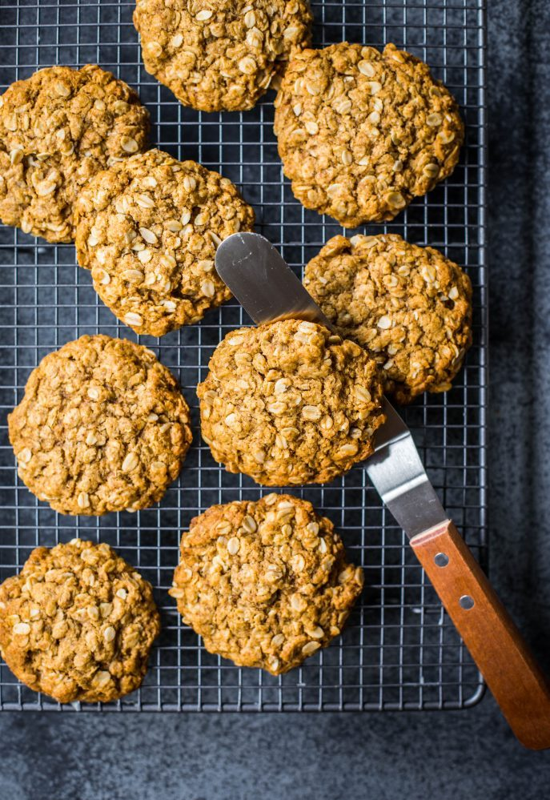

About Me
I'm Jane and I love baking and I love Anzac biscuits even more.
for weekly Anzac biscuit recipes

ANZAC Day (April 25th) is the day that marks the anniversary of the first major military action fought by Australian and New Zealand forces as they landed in Gallipoli.
As you can imagine, fresh and nourishing food was scarce for soldiers during that time. The story goes that the women back in Australia wanted to do something about it and came up with a biscuit that they could send their men that would last the long journey overseas without spoiling. Made from rolled oats, coconut, sugar, flour, butter, golden syrup, bicarbonate soda and boiling water, the traditional ANZAC biscuit was born.
Buttery and sweet with a slight zing from the bicarb soda, they are traditionally supposed to be baked until they are crunchy jaw-breakers. According to the Australian War Memorial, soldiers used to grind them up and use them to make porridge. I like the best of both worlds and prefer mine crisp on the outside and still a bit chewy in the middle.
I have to say, even today there is nothing quite like a homemade traditional ANZAC biscuit. Do not even bother with buying a supermarket version, please. They just aren’t the same. Besides, traditional ANZAC biscuits take no time to make and can be eaten straighten away.
So, if you are feeling nostalgic, patriotic or want to experience a bit of Australian history, get baking and spare a moment thinking of those soldiers and their families whose lives were changed forever. Lest we forget.
| Prep Time | 20 minutes | |
| Cooking Time | 20 minutes | |
| Total Time | 40 minutes | |
| Serves | 4 people | |
| Author | Jane Doe |